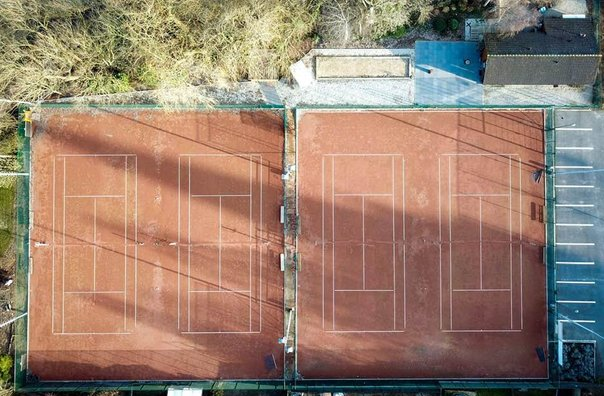

Hallo, mijn naam is Thomas De Groote en ik ben vorige week 18 jaar geworden, op 10 oktober om precies te zijn.
Ik woon in Avelgem sinds mijn geboorte en heb hier ook heel mijn leven op school gezeten.
Mijn telefoonnummer is +32 468 12 34 56 en mijn emailadres is thomas.degroote123@gmail.com
Hobby's
Als hobby ben ik vaak bezig met computers, voornamelijk met PC-problemen van familieleden, maar soms speel ik ook tennis bij tennisclub Avelgem.
IT & Cybersecurity
Al van jongs af aan ben ik bezig met technologie. Ik ben geïnteresseerd in hoe computers werken, waarom systemen falen en hoe je beveiligingslekken kunt opsporen en oplossen. Cybersecurity spreekt me vooral aan omdat het een combinatie is van logisch denken, creativiteit en probleemoplossing.
Ik lees graag artikels over recente cyberaanvallen, datalekken en nieuwe beveiligingstechnieken. Af en toe probeer ik zelf kleine beveiligingstesten uit in een veilige, gecontroleerde omgeving om bij te leren.
Computerherstellingen
Naast mijn interesse in cybersecurity help ik vaak familie en vrienden met allerlei computerproblemen. Dat gaat van trage laptops sneller maken tot Windows opnieuw installeren, drivers oplossen of netwerken instellen. Het geeft me voldoening om technische problemen op te lossen en mensen terug verder te helpen.
Tennis
Naast IT sport ik ook regelmatig. Tennis speel ik vooral recreatief bij tennisclub Avelgem, meestal in het weekend. Ik vind het leuk omdat het zowel fysiek als mentaal uitdagend is, en het helpt mij om mijn hoofd leeg te maken na een drukke week.
Auto's
Mijn grootste interesse is voornamelijk IT in het algemeen, maar bovendien heb ik ook een grote interesse in auto's (vooral van het merk BMW). Ik volg graag de nieuwste modellen, technologie en motortypes.
Wat mij het meest aanspreekt aan BMW is de combinatie van sportiviteit, comfort en design. In mijn vrije tijd kijk ik autovideo’s, vergelijk ik modellen of experimenteer ik met online configurators.
Hieronder zie je ook een foto van mijn eigen BMW, een X1 xDrive25e met 220pk, uit het jaar 2021.

Vrienden
| header | header | header | header | header | header | header |
|---|---|---|---|---|---|---|
| data | data | data | data | data | data | data |
| data | data | data | data | data | data | data |
| data | data | data | data | data | data | data |
| data | data | data | data | data | data | data |
| data | data | data | data | data | data | data |